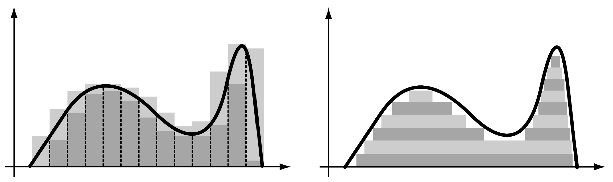

The sampling mean, denoted as \( \bar{X} \), is the average of a sample drawn from a population: \[ \bar{X} = \frac{1}{n} \sum_{i=1}^n X_i \] where \( X_i \) are the sample values, and \( n \) is the sample size. The variance of the sample mean is: \[ \text{Var}(\bar{X}) = \frac{\sigma^2}{n} \] where \( \sigma^2 \) is the population variance.
Key features of their distributions:
The Lebesgue–Stieltjes integral generalizes the Riemann integral by integrating with respect to a function \( G(x) \), which may be non-decreasing and not necessarily absolutely continuous. For a function \( f \), the integral is:
\[
\int_a^b f(x) \, dG(x)
\]
Graphically it can be seen like this:
Riemann integration on the left and lebesgue integration on the right

Applications: